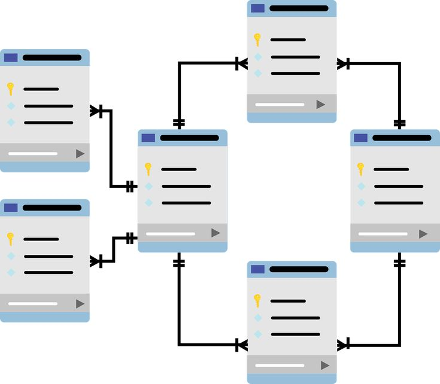
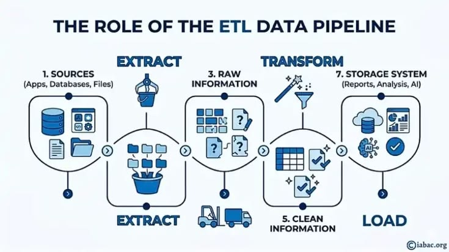
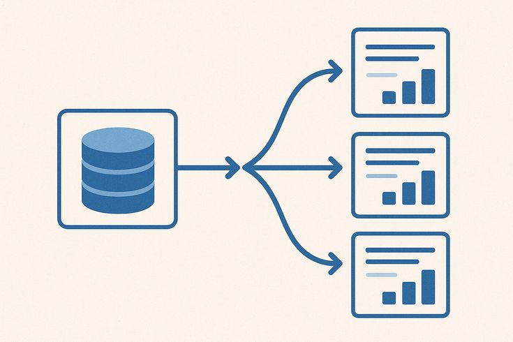

Concepto
¿Qué es la Normalización?
La normalización es un proceso matemático y lógico que se aplica a las bases de datos relacionales para organizar los campos y las tablas de manera óptima. Su principal objetivo es purificar la estructura del esquema de datos para eliminar redundancias (datos repetidos) y proteger la base de datos contra anomalías destructivas al insertar, actualizar o eliminar registros en el software de cómputo.
El Gran Problema: La Redundancia y las Anomalías
Cuando un diseño no está normalizado, surgen tres peligros técnicos críticos:
Anomalía de Inserción: No poder registrar una entidad porque le faltan datos de otra (por ejemplo, no poder registrar un nuevo curso de ingeniería hasta que haya al menos un alumno inscrito).
Anomalía de Actualización: Si la dirección de un proveedor se repite en 500 filas de productos y cambia de domicilio, hay que modificar las 500 filas. Si una sola falla, la base de datos se vuelve inconsistente.
Anomalía de Eliminación: Al borrar un registro, perder información valiosa de forma colateral (por ejemplo, al dar de baja al único alumno que recibía un curso, se borran por completo los datos técnicos del curso).

¿Cómo se realiza?
La normalización se ejecuta aplicando reglas secuenciales llamadas **Formas Normales**. Para que una base de datos sea considerada robusta y profesional en la industria, generalmente debe alcanzar la Tercera Forma Normal (3FN):
1. Primera Forma Normal (1FN): Atomicidad
Establece que todos los valores de las celdas deben ser atómicos (indivisibles). Esto significa que no pueden existir múltiples valores o listas de datos dentro de una misma columna.
Ejemplo: Si en la columna Teléfonos guardas "5555-1234, 4444-5678", rompes la 1FN. La solución es separar esos teléfonos en filas independientes o crear una tabla exclusiva para números telefónicos.
2. Segunda Forma Normal (2FN): Dependencia Funcional Completa
Para llegar a la 2FN, la tabla primero debe cumplir con la 1FN. Además, exige que todas las columnas que no formen parte de la clave primaria dependan por completo de **toda** la clave primaria, y no solo de una parte de ella (aplica principalmente para tablas con claves compuestas).
Ejemplo: En una tabla "Asignación" cuya clave compuesta es (ID_Estudiante, ID_Curso), si incluyes la columna Nombre_Curso, esta depende únicamente del ID_Curso y no del estudiante. Rompes la 2FN. La solución es extraer los datos del curso a su propia tabla.
3. Tercera Forma Normal (3FN): Eliminación de Dependencias Transitivas
Requiere cumplir con la 2FN. Dicta que las columnas que no son claves deben depender directamente de la clave primaria, y no a través de otra columna intermedia.
Ejemplo: En una tabla de "Empleados" con clave ID_Empleado, si guardas las columnas ID_Departamento y Nombre_Departamento, el nombre del departamento depende de su ID, y el ID depende del empleado. Hay una dependencia transitiva. La solución es segmentar el departamento en una tabla independiente.

¿Dónde se aplica?
La normalización se aplica obligatoriamente en la fase de diseño lógico de cualquier sistema transaccional (OLTP). Es indispensable al modelar el software de facturación electrónica, los sistemas de gestión hospitalaria para historiales clínicos, y las bases de datos de aplicaciones bancarias donde un solo dato duplicado o inconsistente podría provocar errores financieros graves o pérdidas de información.

Reflexión Personal
Creo que no se puede hablar de bases de datos sin mencionar la normalización, si bien una base de datos es útil por si misma, no es tan eficiente si no se le aplican los tres niveles de la normalización, utilizarnos nos permite tener una estructura visualmente más ordenada y mucho más funcional que si se omite.
Elegí el tema porque complementa muy bien el tema de las bases de datos y porque me gusta la idea de poder facilitar el uso de las bases de datos, yo tengo un emprendimiento propio y en más de uan ocación he necesitado usar bases de datos, por eso se que al poder simplificar la información la información no solo se encuntra más rápido sino que resulta mucho más útil de esa manera.